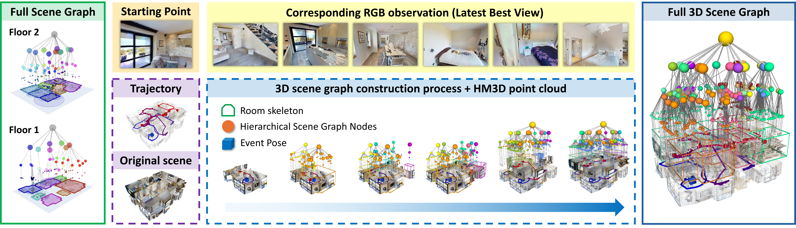
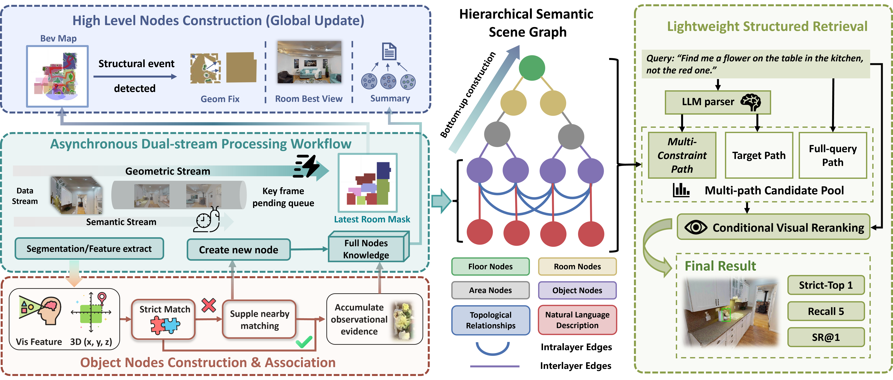

Driven by advancements in foundation models, semantic scene graphs have emerged as as a prominent paradigm for high-level 3D environmental abstraction in robot navigation. However, existing approaches are fundamentally misaligned with the needs of embodied tasks. As they rely on either offline batch processing or implicit feature embeddings, the maps can hardly support interpretable human-intent reasoning in complex environments. To address these limitations, we present INHerit-SG.
We redefine the map as a structured, RAG-ready knowledge base where natural-language descriptions are introduced as explicit semantic anchors to better align with human intent. An asynchronous dual-process architecture, together with a Floor-Room-Area-Object hierachy, decouples geometric segmentation from time-consuming semantic reasoning. An event-triggered map update mechanism reorganizes the graph only when meaningful semantic events occur. This strategy enables our graph to maintain long-term consistency with relatively low computational overhead. For retrieval, we deploy multi-role Large Language Models (LLMs) to decompose queries into atomic constraints and handle logical negations, and employ a hard-to-soft filtering strategy to ensure robust reasoning. This explicit interpretability improves the success rate and reliability of complex retrievals, enabling the system to adapt to a broader spectrum of human interaction tasks. We evaluate INHerit-SG on a newly constructed dataset, HM3DSem-SQR, and in real-world environments. Experiments demonstrate that our system achieves state-of-the-art performance on complex queries, and reveal its scalability for downstream navigation tasks.

INHerit-SG Overview. Our system build a hierarchical semantic memory during online exploration and operate closed-loop retrieval. (Left) The hierarchical scene graph of a real-world office building built through incremental mapping. (Right) The robot parses a complex query into structural constraints and follows the retrieval pipeline to complete the task sequentially.

The INHerit-SG Framework. The system bridges real-time mapping with logic-aware retrieval. (Left) The pipeline employs a dual-stream architecture to balance tracking and reasoning. A Event-Triggered Map module (top-left) optimizes topological updates based on VLM decisions, while the Incremental Association block (bottom-left) fuses SAM3/DINOv3 features to instantiate nodes. (Center) The resulting data structure is a multi-level scene graph that explicitly models topological relationships. (Right) Complex queries are decomposed by Multi-role LLMs into specific constraints, including negation and weights. The system ranks candidates using a scoring function and executes a final VLM Verification step to ensure precise intent grounding.
Scene 824: Original Point Cloud
Scene 824: Constructed SG + Point Cloud
Scene 861: 1st Floor Point Cloud
Scene 861: 1st Floor Point Cloud + SG
Scene 861: 1st & 2nd Floor Point Cloud
Scene 861: 1st & 2nd Floor Point Cloud + SG
@misc{fang2026inheritsgincrementalhierarchicalsemantic,
title={INHerit-SG: Incremental Hierarchical Semantic Scene Graphs with RAG-Style Retrieval},
author={YukTungSamuel Fang and Zhikang Shi and Jiabin Qiu and Zixuan Chen and Jieqi Shi and Hao Xu and Jing Huo and Yang Gao},
year={2026},
eprint={2602.12971},
archivePrefix={arXiv},
primaryClass={cs.RO},
url={https://arxiv.org/abs/2602.12971},
}